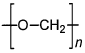
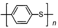
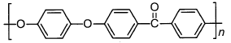
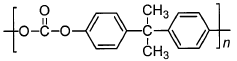
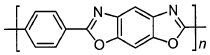

令和6年度 問20 高分子化学
次のA〜Eに示すエンジニアリングプラスチックの名称と、その代表的な化学構造式が正しいものの組み合わせとして最も適切なものはどれか。
| 項目 | 名称 | 化学構造式 |
|---|---|---|
| A | ポリアセタール |  |
| B | ポリフェニレンスルフィド |  |
| C | ポリフェニレンエーテル |  |
| D | ポリエーテルエーテルケトン |  |
| E | ポリイミド |  |
①
AとB
②
AとD
③
BとC
④
CとD
⑤
DとE
正答
① AとB
正答は1番です。
A：正しい (ポリアセタール / POM)
ホルムアルデヒドを重合させて得られる、オキシメチレン単位 (-CH₂O-) を主鎖に持つポリマーです。
B：正しい (ポリフェニレンスルフィド / PPS)
ベンゼン環と硫黄原子が交互に結合した構造を持ち、高い耐熱性と耐薬品性を有します。
C：誤り (ポリフェニレンエーテル / PPE)
図に示されているのはポリエーテルエーテルケトン (PEEK) の構造式です。PPEはベンゼン環に酸素原子が直接結合した構造を持ち、通常は2,6-キシレノールの重合体が用いられます。
D：誤り (ポリエーテルエーテルケトン / PEEK)
図に示されているのはポリカーボネート (PC) の代表的な構造です。PEEKはCの図のような構造を持ちます。
E：誤り (ポリイミド / PI)
図に示されているのはポリベンズオキサゾール (PBO) の構造式です。